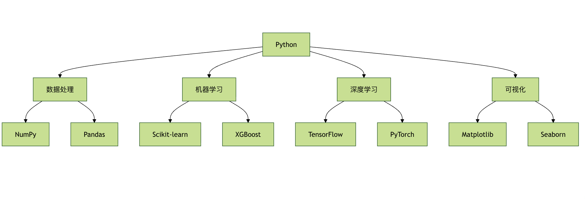
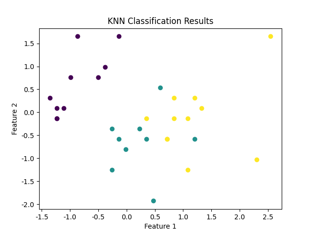

Python入門機械学習
Pythonは、機械学習で最もよく使われるプログラミング言語の1つです。学習が容易で、強力なライブラリが揃い、コミュニティのエコシステムが充実しているためです。
次に、Pythonを使って機械学習を始める方法を段階的に説明し、必要な一般的なライブラリを紹介します。
Pythonと必要なライブラリのインストール
方法1：公式インストーラー
まず、Pythonがインストールされていることを確認してください。Python公式サイトにアクセスできます。https://www.python.org/最新バージョンをダウンロードしてインストールしてください。
Windows の場合：
# 1. 下载安装程序后运行 # 2. 勾选 "Add Python to PATH" # 3. 选择 "Install for all users" # 4. 点击 "Install" 开始安装
macOS の場合：
# 方法1：使用官网安装包 # 下载 .pkg 文件并双击安装 # 方法2：使用 Homebrew brew install python3
Linux の場合：
# Ubuntu/Debian sudo apt update sudo apt install python3 python3-pip # CentOS/RHEL sudo yum install python3 python3-pip
方法2：Anaconda ディストリビューション
Anacondaは、データサイエンス向けに設計されたPythonディストリビューションです。まるで、必要なツールがすべてプリインストールされた「機械学習ツールボックス」のようなものです。
Anacondaの利点
- 一般的なライブラリがプリインストール：NumPy、Pandas、Scikit-learn など
- 環境管理：conda コマンドで仮想環境を管理
- グラフィカルインターフェース：Anaconda Navigator による視覚的な操作
- クロスプラットフォーム：すべての主要オペレーティングシステムに対応
Anaconda のインストール
- アクセスしてhttps://www.anaconda.com/products/distribution
- お使いのシステムに対応するインストーラーをダウンロードし
- インストーラーを実行し、指示に従ってインストールを完了します。
インストールの確認:
conda --version python --version
Pythonにまだ慣れていない場合は、まず当サイトのPython チュートリアル。
Condaにまだ慣れていない場合は、まず当サイトのAnaconda チュートリアル。
仮想環境を作成するには、Anacondaをインストールすることをお勧めします。
なぜ仮想環境が必要なのか？
仮想環境は、各プロジェクトのために用意された独立したキッチンのようなものです。異なるプロジェクトの「調味料」（ライブラリのバージョン）が互いに干渉するのを防ぎます。
仮想環境の利点
- 依存関係の分離：プロジェクトごとに異なるバージョンのライブラリを使用
- 環境の再現：他のマシンで同じ環境を簡単に再構築
- 権限管理：システムのPython環境を汚染しない
- プロジェクトのクリーンアップ：プロジェクトを削除するときに関連環境も一緒に削除
conda で環境を管理する
# 创建环境 conda create -n ml_env python=3.8 # 激活环境 conda activate ml_env # 安装包 conda install numpy pandas scikit-learn # 列出环境 conda env list # 删除环境 conda env remove -n ml_env
開発ツールの設定
Jupyter Notebook
Jupyter Notebookは、データサイエンティストのデジタルラボです。インタラクティブなプログラミングと可視化表示をサポートします。
Jupyter のインストールと起動
# 安装 Jupyter pip install jupyter # 启动 Jupyter Notebook jupyter notebook # 启动 Jupyter Lab（更现代的界面） jupyter lab
Jupyter の基本的な使い方
例
# 以下のコードを Jupyter で実行します
# 1. データのインポートと探索
import pandas as pd
import numpy as np
import matplotlib.pyplot as plt
# サンプルデータを作成
data = {
'名前': ['田中', '鈴木', '佐藤', '高橋'],
'年齢': [25, 30, 35, 28],
'都市': ['北京', '上海', '広州', '深セン'],
'給与': [15000, 20000, 18000, 22000]
}
df = pd.DataFrame(data)
print("データのプレビュー：")
print(df.head())
# 2. データの可視化
plt.figure(figsize=(10, 4))
plt.subplot(1, 2, 1)
plt.bar(df['名前'], df['年齢'])
plt.title('年齢分布')
plt.xlabel('名前')
plt.ylabel('年齢')
plt.subplot(1, 2, 2)
plt.bar(df['名前'], df['給与'])
plt.title('給与分布')
plt.xlabel('名前')
plt.ylabel('給与')
plt.tight_layout()
plt.show()
# 3. 簡単な統計分析
print("\n"基本統計情報：")
print(df.describe())
print("\n"都市分布：")
print(df['都市'].value_counts())
VS Code の設定
VS Codeは、軽量でありながら高機能なコードエディターです。プラグインを使うことで、プロフェッショナルな機械学習開発環境になります。
推奨プラグイン
- Python：Microsoft 公式 Python プラグイン
- Jupyter：Jupyter Notebook に対応
- Python Docstring Generator：docstring を自動生成
- Bracket Pair Colorizer：括弧の対応に色を付ける
- GitLens：Git 機能を強化
VS Code 設定の例
// .vscode/settings.json
{
"python.defaultInterpreterPath": "./envs/ml_env/bin/python",
"python.linting.enabled": true,
"python.linting.pylintEnabled": true,
"python.formatting.provider": "black",
"python.testing.pytestEnabled": true,
"jupyter.askForKernelRestart": false,
"editor.fontSize": 14,
"editor.tabSize": 4,
"editor.insertSpaces": true
}
機械学習ライブラリのインストール
よく使われる機械学習ライブラリ：
pip install numpy pandas matplotlib seaborn scikit-learn
ディープラーニングフレームワークを使用する予定がある場合は、次のようにインストールします：
pip install torch # 或者 pip install tensorflow
関連コース：
- Python チュートリアル
- Numpy チュートリアル
- Pandas チュートリアル
- Matplotlib チュートリアル
- scikit-learn チュートリアル
- PyTorch チュートリアル
- OpenCV チュートリアル

Pythonで機械学習を行う場合、プロセス全体は一般的に以下の手順に従います：
必要なライブラリのインポート- 例：NumPy、Pandas、Scikit-learn など。
データの読み込みと準備- データは機械学習の中核です。データを読み込み、必要な前処理（データクリーニング、欠損値の補完など）を行う必要があります。
モデルとアルゴリズムの選択- タスクに応じて適切な機械学習アルゴリズム（線形回帰、決定木など）を選択します。
モデルのトレーニング- トレーニングデータを使用してモデルを学習させます。
モデルの評価- テストデータでモデルの正確性を評価し、評価結果に基づいてモデルを最適化します。
モデルとハイパーパラメータの調整- 評価結果に基づいてモデルのハイパーパラメータを調整し、モデルの性能をさらに最適化します。
簡単な機械学習の例：Scikit-learn を使った分類
Scikit-learn（略称 Sklearn）は、オープンソースの機械学習ライブラリで、NumPy、SciPy、matplotlib といった科学計算ライブラリの上に構築され、シンプルで効率的なデータマイニングおよびデータ分析ツールを提供します。
Scikit-learn には、多くの一般的な機械学習アルゴリズムが含まれています：
- 線形回帰、リッジ回帰、Lasso 回帰
- サポートベクターマシン（SVM）
- 決定木、ランダムフォレスト、勾配ブースティング木
- クラスタリングアルゴリズム（K-Means、階層的クラスタリング、DBSCAN など）
- 次元削減技術（PCA、t-SNE など）
- ニューラルネットワーク
次に、簡単な分類タスクとして、アヤメデータセット（Iris Dataset）を使用して機械学習の流れを説明します。アヤメデータセットは古典的なデータセットで、150個のサンプルが含まれ、3種類のアヤメの花びらとがく片の長さと幅を記述しています。
ステップ1：ライブラリのインポート
必要な Python ライブラリをインポートします：
import numpy as np import pandas as pd import matplotlib.pyplot as plt from sklearn.datasets import load_iris from sklearn.model_selection import train_test_split from sklearn.preprocessing import StandardScaler from sklearn.neighbors import KNeighborsClassifier from sklearn.metrics import accuracy_score
ステップ2：データの読み込み
アヤメデータセットを読み込みます：
例
iris = load_iris()
# データをpandas DataFrameに変換する
X = pd.DataFrame(iris.data, columns=iris.feature_names) # 特徴データ
y = pd.Series(iris.target) # ラベルデータ
# 最初の5行を表示する
print(X.head())
出力結果は次のようになります：
sepal length (cm) sepal width (cm) petal length (cm) petal width (cm) 0 5.1 3.5 1.4 0.2 1 4.9 3.0 1.4 0.2 2 4.7 3.2 1.3 0.2 3 4.6 3.1 1.5 0.2 4 5.0 3.6 1.4 0.2
ステップ3：データセットの分割
データセットをトレーニングセットとテストセットに分割します。通常は70%のトレーニングセットと30%のテストセットの比率を使用します：
例
X_train, X_test, y_train, y_test = train_test_split(X, y, test_size=0.2, random_state=42)
ステップ4：特徴量のスケーリング（標準化）
多くの機械学習アルゴリズムは特徴量のスケールに依存しています。特にK近傍法のようなアルゴリズムです。各特徴量の平均が0、標準偏差が1になるようにするため、標準化を使用してデータを処理します：
例
scaler = StandardScaler()
X_train = scaler.fit_transform(X_train)
X_test = scaler.transform(X_test)
ステップ5：モデルの選択とトレーニング
この例では、分類にK-Nearest Neighbors（KNN）アルゴリズムを選択します：
例
knn = KNeighborsClassifier(n_neighbors=3)
# モデルをトレーニング
knn.fit(X_train, y_train)
ステップ6：モデルの評価
トレーニングが完了したら、テストセットを使用してモデルの精度を評価します：
例
y_pred = knn.predict(X_test)
# 精度を計算
accuracy = accuracy_score(y_test, y_pred)
print(f'モデル精度: {accuracy:.2f}')
上記のコードを実行すると、出力結果は次のようになります：
模型准确率: 1.00
ステップ7：結果の可視化（オプション）
可視化により、モデルのパフォーマンスをさらに理解できます。特に多次元データセットの場合です。例えば、2次元グラフでKNN分類の結果を表示できます（ただし、ここではデータを次元削減して2次元に簡略化する必要があります）。
例
import pandas as pd
import matplotlib.pyplot as plt
from sklearn.datasets import load_iris
from sklearn.model_selection import train_test_split
from sklearn.preprocessing import StandardScaler
from sklearn.neighbors import KNeighborsClassifier
from sklearn.metrics import accuracy_score
# アイリスデータセットを読み込み
iris = load_iris()
# データをpandas DataFrameに変換
X = pd.DataFrame(iris.data, columns=iris.feature_names) # 特徴量データ
y = pd.Series(iris.target) # ラベルデータ
# トレーニングセットとテストセットに分割（80% トレーニングセット、20% テストセット）
X_train, X_test, y_train, y_test = train_test_split(X, y, test_size=0.2, random_state=42)
# 特徴量を標準化
scaler = StandardScaler()
X_train = scaler.fit_transform(X_train)
X_test = scaler.transform(X_test)
# KNN分類器を作成
knn = KNeighborsClassifier(n_neighbors=3)
# モデルをトレーニング
knn.fit(X_train, y_train)
# テストセットを予測
y_pred = knn.predict(X_test)
# 精度を計算
accuracy = accuracy_score(y_test, y_pred)
# 可視化 - ここでは簡単な例を示しています。実際の状況に応じてプロット方法を選択してください
plt.scatter(X_test[:, 0], X_test[:, 1], c=y_pred, cmap='viridis', marker='o')
plt.title("KNN Classification Results")
plt.xlabel("Feature 1")
plt.ylabel("Feature 2")
plt.show()
出力画像は以下のようになります：

その他の拡張
クリックしてノートを共有
ノートはこの記事の内容を拡張したものである必要があります！
記事の投稿は、こちらをクリックしてください
登録招待コードの取得方法
ノートを共有する前にログインする必要があります！
登録招待コードの取得方法